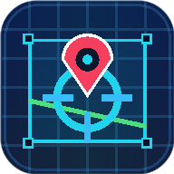

레이어: 0
CIRCLE
선택된 구성요소
CAD 좌표 (X, Y)
X: 0.00, Y: 0.00
위경도 (Lat, Lng)
37.566500, 126.978000
내 위치 거리
확인 전

CAD↔Map국가좌표계가 아닌 현장 임의 좌표로 그려진 도면일 경우, 도면의 2개 기준점(X,Y)과 실제 지도의 위경도 2개 지점을 입력하여 지도 위에 정확히 안착시킵니다.
⋮ 또는 ≡ 클릭 → [앱 설치] 또는 [홈 화면에 추가] 선택
↑ 클릭 → [홈 화면에 추가] 선택